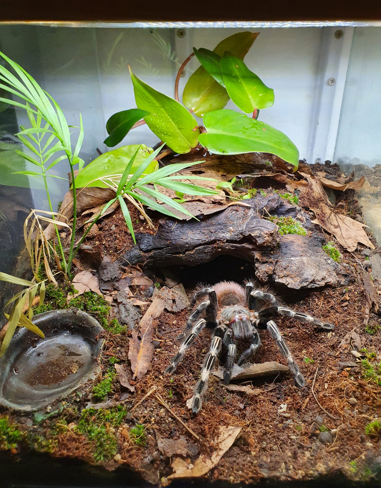
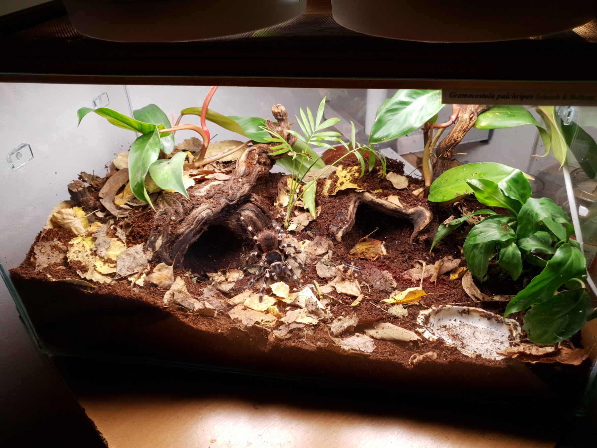
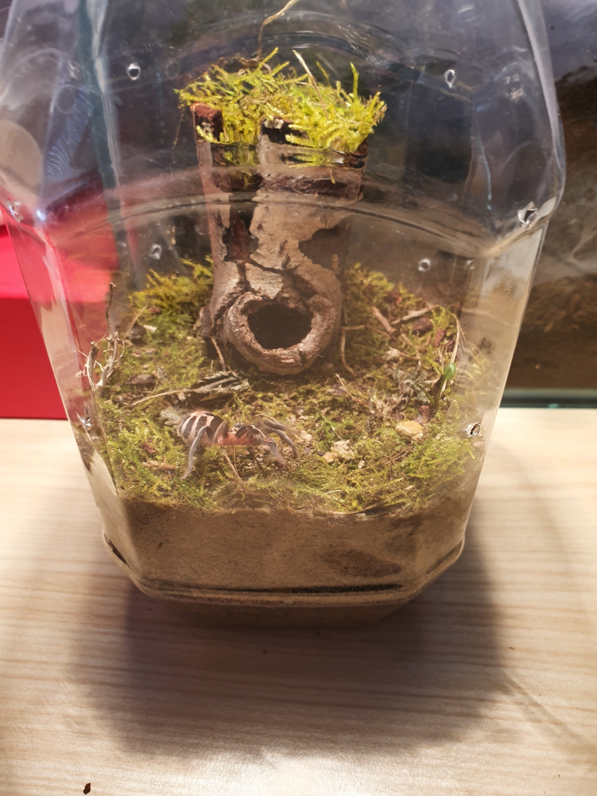
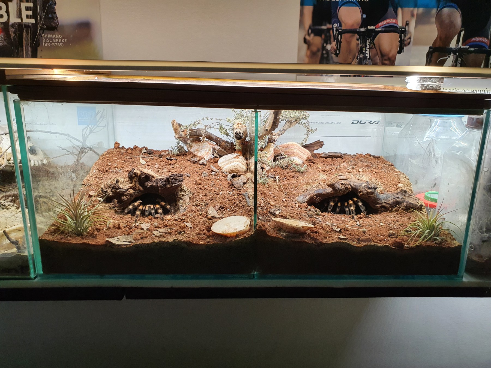
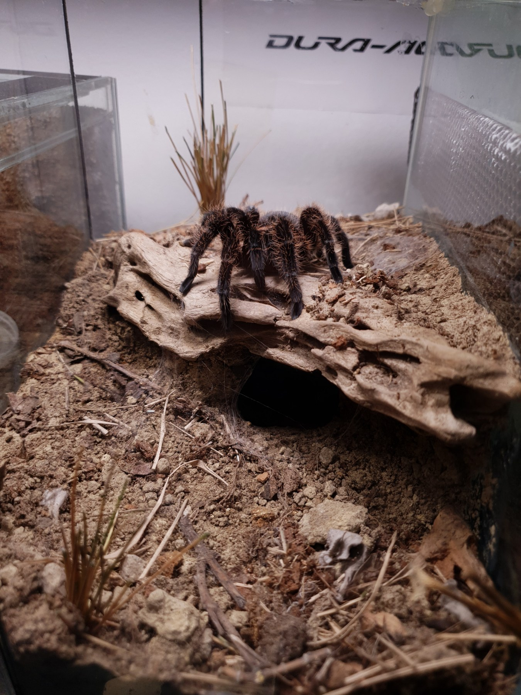
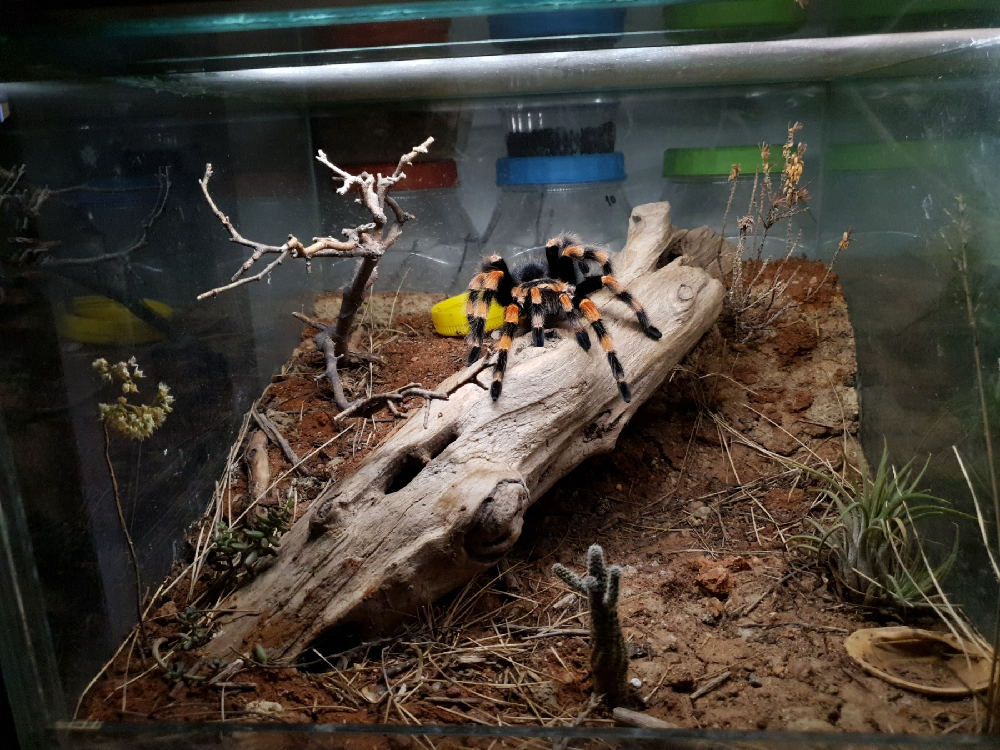

Ne baš toliko zastupljen u Srbiji, moj hobi je čuvanje/uzgoj paukova, tačnije tarantula. Ovim se bavim sad već skoro 15 godina i za to vreme sam naučio sve moguće o njima. Kolekcija mi nije naročito velika, sastoji se od svega desetak vrsta koje su različitog karaktera, temperamenta, fizičkih karakteristika i zahtevaju različite uslove za čuvanje
Ukratko, mogli bismo napraviti 3 tipa podele:
Kada se sve ove karakteristike krenu kombinovati bude jasnije zašto su vrste međusobno toliko različite i zanimljive za čuvanje te ih ljubitelji imaju u većem broju.
Pošto su ovi ljubimci slabo aktivni (u poređenju sa većinom drugih), pa samim tim i nezahtevni za održavanje, počeo sam njihovo čuvanje da baziram na uređenju terarijuma što približnije staništima u koje žive, po principu - ako će ceo dan da stoji na jednom mestu, barem neka terarijum izgleda lepo.
U svim prašumskim terarijumima se nalaze žive biljke i terarijumi su bioaktivni što znači da sadrže poveći verijetet sitnih organizama koji ga čiste od ostataka hrane ili eventualne buđi što znači da se nikad ne moraju prati i sređivati. U nekim pustinjskim terarijumima imam po jednu živu biljku a ostatak dekora čine suve grane, travčice i kamenje.
Evo primera prašumskih terarijuma:
  a evo i pustinjskih:
  